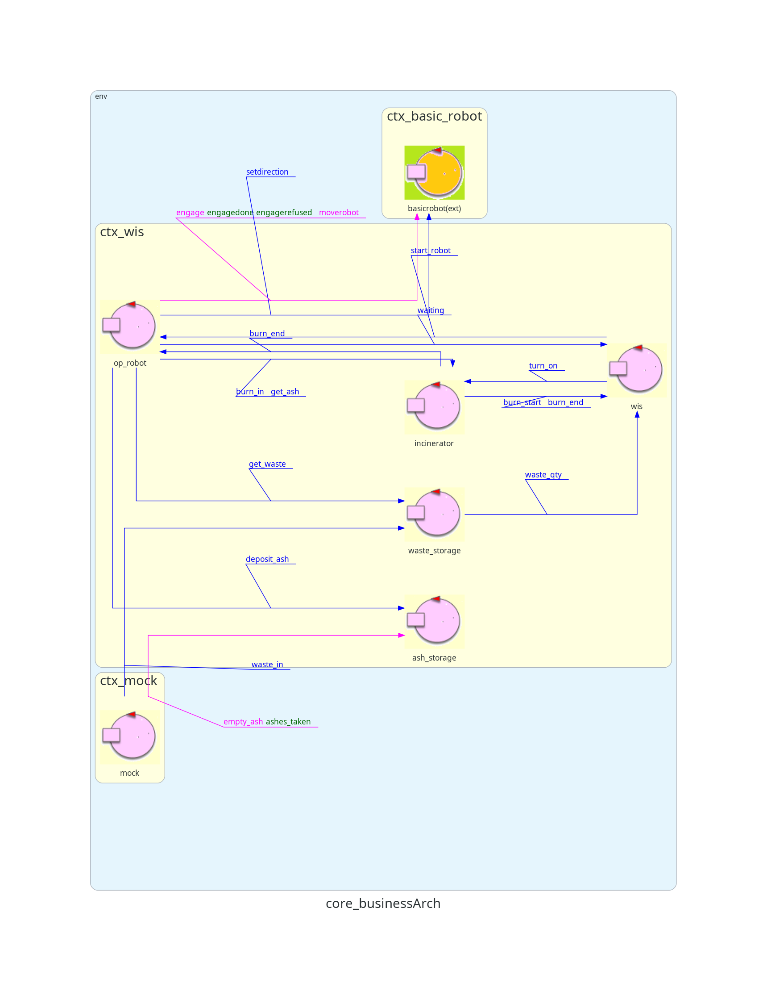

Architettura Logica

Progetto
Descrizione
Come accennato nell'analisi del problema, per tenere traccia delle posizioni rilevanti si è utilizzata una base di conoscenza prolog.Inoltre, si è deciso di assegnare ad OpRobot la responsabilità di trovare all'interno di tale base le coordinate di una specifica posizione (nell'analisi del problema si era evidenziato che tutti i componenti, potenzialmente, hanno il diritto di accedervi).
L'opRobot sfrutterà questa base di conoscenza per poter comunicare le coordinate relative alle posizioni al BasicRobot e quindi spostarsi verso questi punti rilevanti
Il predicato prolog creato ha funzionamento molto intuitivo: prende in ingresso una posizione e tre variabili libere, x, y ed una direzione, ed unifica con la posizione che fa match:
- x: ascissa del punto
- y: ordinata del punto
- direzione: permette di ruotare il robot in modo che sia rivolto verso la posizione rilevante interessata (es. affinchè sia rivolto verso BURNIN quando deposita un pacchetto).
Inoltre, il progetto prevede che una entità esterna possa:
- Inserire un RP all'interno del Waste Storage
- Prelevare cenere dall'Ash Storage
- Accendere l'incinerator
3): Nei requisiti era specificato che l'incinerator deve essere messo in funzione da un segnale di un'entità esterna.
Quindi per simulare questo comportamento, per semplicità, si è deciso che sarà il WIS ad inviare il segnale di accensione all'Incinerator.
Nuova Architettura Logica
Testing
Deployment
Per poter eseguire la demo del Core Business sono disponibili due file batch:- basicRobot.bat: avvia l'immagine docker del WEnv, imposta la stanza impostata nel file sceneConfig.js e apre una tab di chrome per la visualizzazione
- wis.bat esegue il sistema
Directory tree:
Sprint1
|
+ - - Sprint1_AnalisiDelProblema
+ - - Sprint1_Progetto
|
+ - - build/distributions/wis-1.0/bin
|
+ - - wis.bat
+ - - unibo.basicrobot24
|
+ - - basicRobot.bat